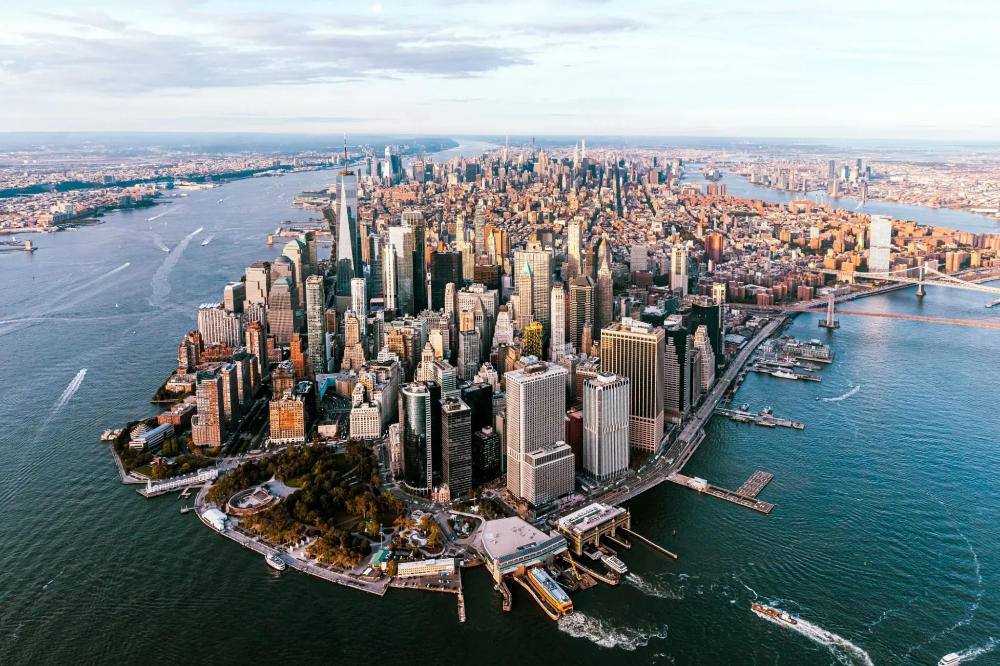
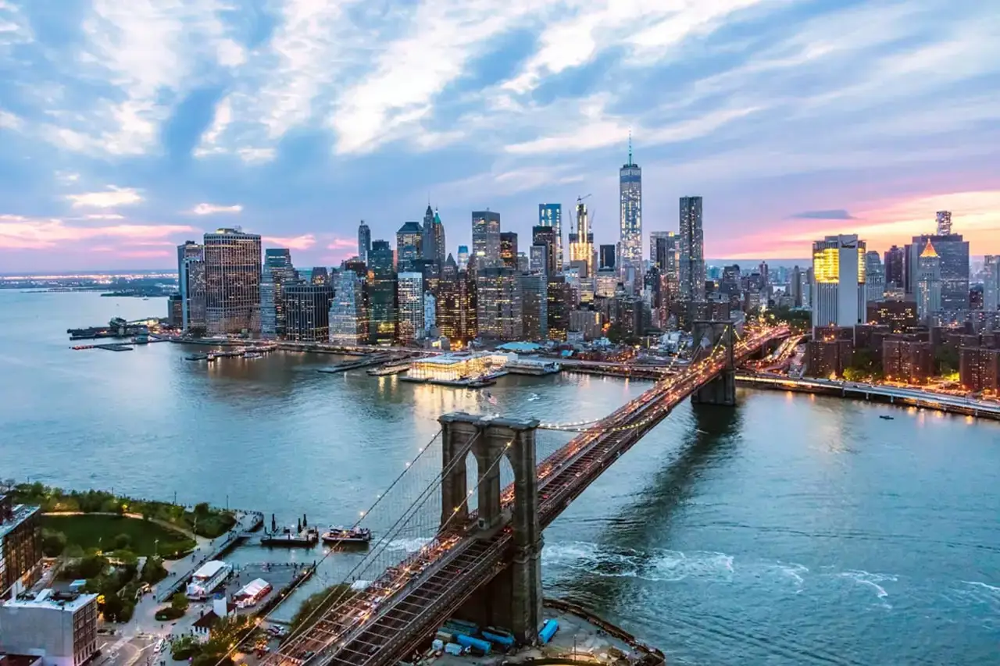
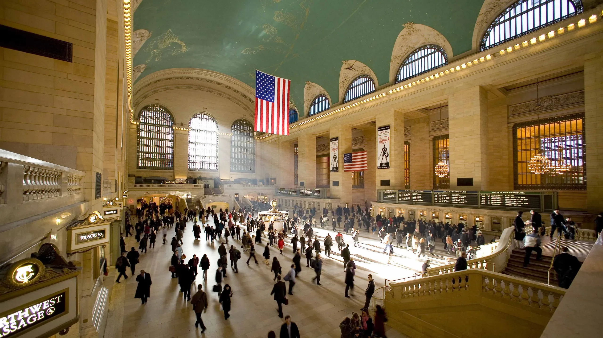
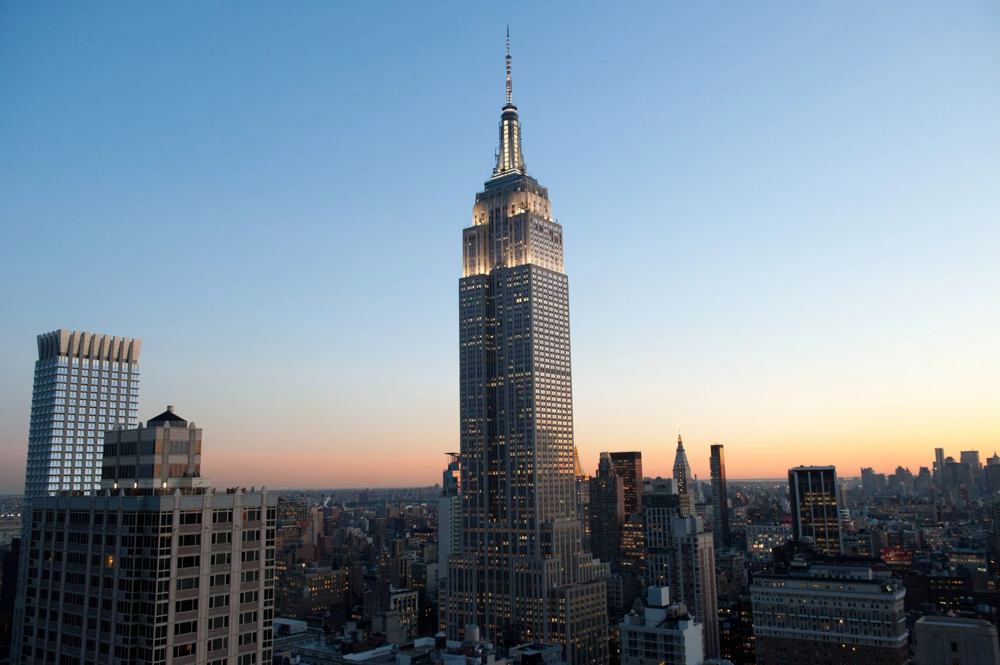
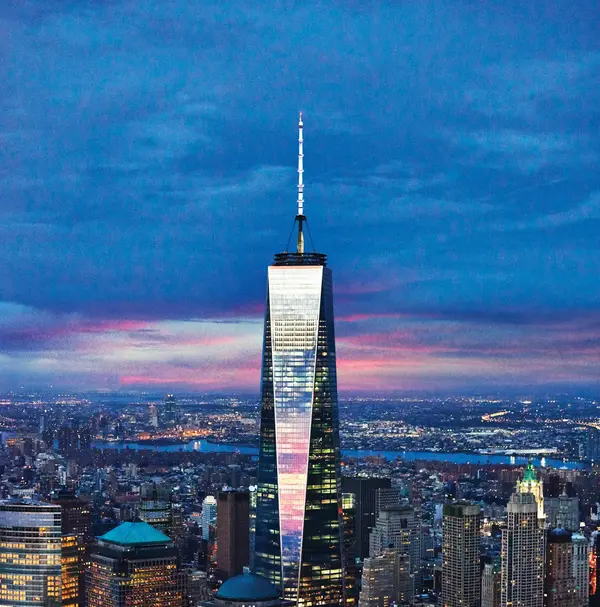

Multimédia
Conheça alguns lugares e referências de New York.
Fotografias








Vídeo
Poesia
Entre luzes, pontes e arranha-céus,
New York desperta junto ao rio.
Cada rua guarda mil histórias,
e a cidade nunca perde o brilho.